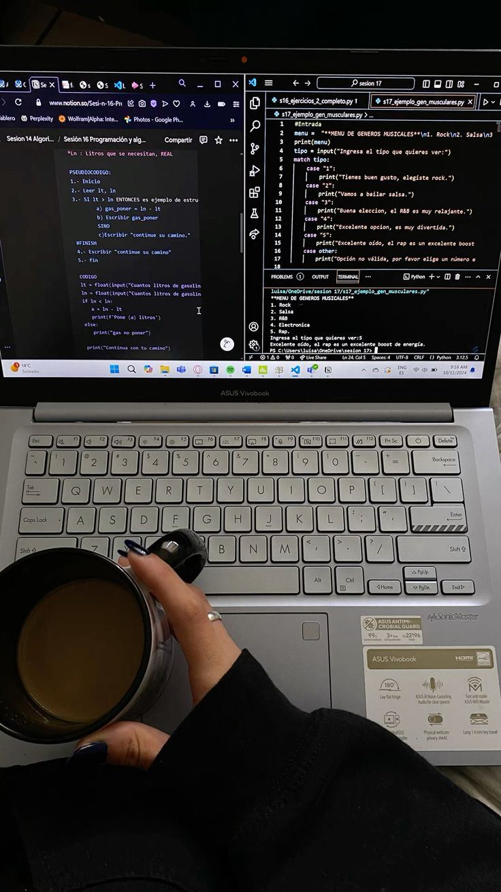

Desenvolvedora criativa focada em construir experiências digitais e interfaces intuitivas.

Aqui estão alguns dos projetos que desenvolvi.
Sou estudante de Ciência da Computação, atualmente no 4º período, e venho construindo minha
trajetória na área de Tecnologia da Informação por meio da graduação e de projetos acadêmicos. Tenho
interesse principalmente em desenvolvimento de software e desenvolvimento web, áreas nas quais busco
aplicar na prática os conhecimentos que venho adquirindo.
Sou uma pessoa criativa, curiosa e gosto de aprender coisas novas. Acredito que a prática é uma
parte importante do aprendizado e, por isso, procuro transformar o que estudo em projetos e desafios
que me permitam desenvolver minhas habilidades.
Atualmente, também estudo inglês e continuo buscando ampliar meus conhecimentos na área de
tecnologia. Meu objetivo é conquistar uma oportunidade de estágio para colocar meus conhecimentos em
prática, adquirir experiência profissional e continuar evoluindo como desenvolvedora.